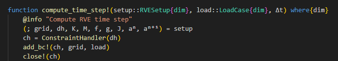
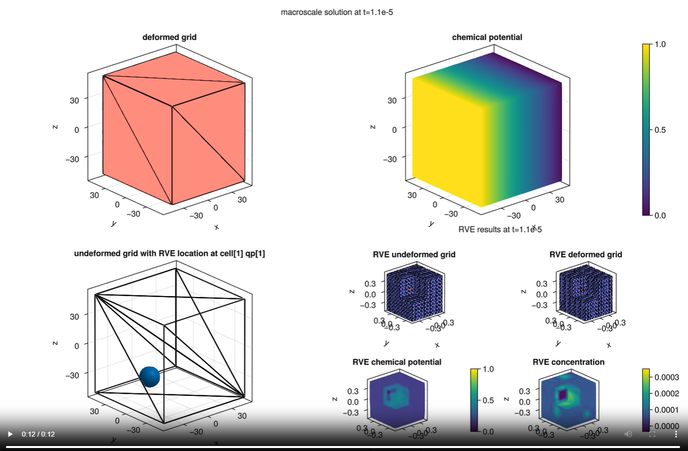
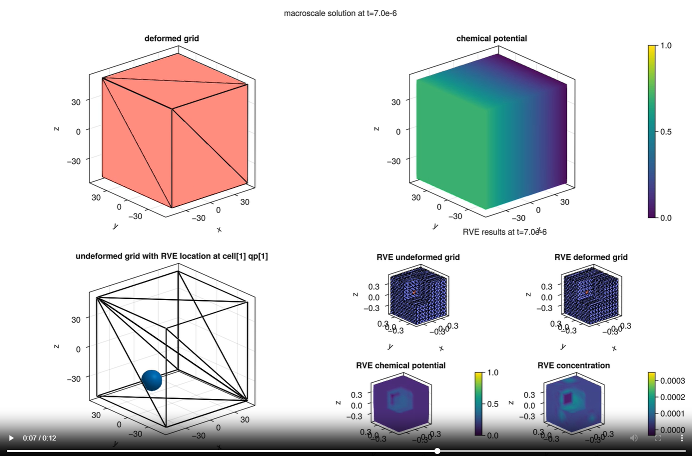

Chemo-Mechanical Problem - Challenges and Problems
Challenges
Right hand side vector for RVE
Not obivous but with introducting the reference values $ c\text{ref}$ and $ \mu\text{ref}$ the following parts from the weak form only multiply the test shape function and can be moved to the right hand side:
\[\begin{align} f_\text{eu} &= \int_{\Omega} - \delta \boldsymbol \varepsilon : \boldsymbol E : \boldsymbol \alpha^\text{ch} c _\text{ref} \ d\Omega \\ f_\text{ec} &= \int_{\Omega} \delta c (\mu _\text{ref} - (\frac{ R \theta_\text{ref}}{ c_\text{m}} + \alpha^\text{ch} : \boldsymbol E : \alpha^\text{ch} )) c _\text{ref} \ d\Omega \end{align}\]
Implicit RVE boundary condition update
The RVE Boundary condition can not be directly explictly defined on sub scale. It needs to be renewed at every time step from corresponding macro scale quadrature point.

Fig. 1: Update for RVE boundary condition at each time step.
Consistent initial guesses
To ensure consistency, the initial guess for chemical potential $ \mu$ and ion concentration $ c$ on both macro scale and sub scale need to be equal to the given reference values $ c\text{ref}$ and $ \mu\text{ref}$. Furthermore, the initial macro-scale boundary condition should correspond with the initial solution guess.
Result storage throughout the time stepping
An object $GaussPointData$ is used as buffer to ensure a direct calculation of $\bar{\boldsymbol \sigma}$, $\bar{\boldsymbol j}$, $\dot{\bar{\boldsymbol c_\text{2}}}$, $\dot{\bar{\boldsymbol c}}$.
All the macro scale result vectors and sub scale result vector at one certain quadrature point throughout the time stepping are stored in a $NamedTuple$ respectively.
Combined animated plotting
Using $observables$ from $Makie.jl$ an animation for the time depenedent results can be created. The location of the reference RVE is specified in the macro scale undeformed grid. Identical color bar for the chemical potential on both macro and sub scale is used to ensure an easier visual comparison.
Remaining Problems
Delayed adapting of RVE BC from macro scale
As it shown in the following figures, for the reference quadrature point cell[1]qp[1], a macro scale chemical potential of approximately 0.5 is reached at time t = 1e-5. For the RVE boundary however, a lower chemical potential of 0.25 is displayed. This value matches the corresponding macro scale chemical potential at time t = 7e-6
 Fig. 2: Results for both macro scale and RVE at time step 1e-5.
 Fig. 3: Results for both macro scale and RVE at time step 7e-6.
Possible cause
- Plotting issue: Since
Makie.jlonly plots the values on element nodes and due to the linearity of the problem, a linear gradient is generated without considering the actual quadrature point data.
Problematic results with increasing elements in macro scale grid
With a macro scale grid with more than one element in each direction, the results are unreasonable:
Limited flexibility on RVE boundary
Due to unsolved technical issues Dirichlet boundary conditions are used for RVE problem. A Periodic boundary condition is more desirable.